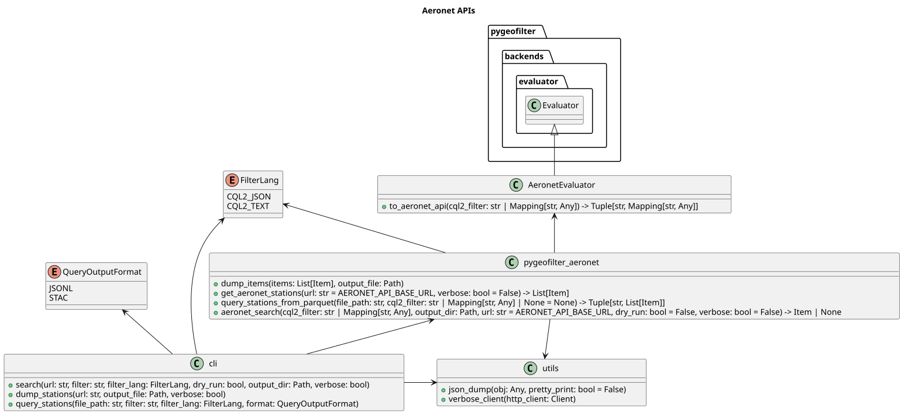

Software design
The command-line interface calls the public functions in pygeofilter_aeronet. Observation functions use AeronetEvaluator to translate filters and the generated AERONET client to perform HTTP requests. Station queries use the pygeofilter DuckDB backend.
AeronetExtension adds station metadata to STAC Items. CSV, GeoPandas, and STAC GeoParquet utilities turn upstream responses into reusable local assets.
Class diagram

See query processing for the behavior of these components, or Python reference for callable entry points.